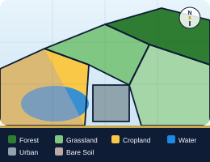
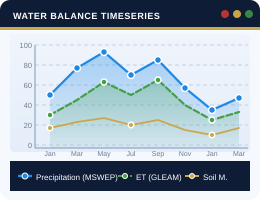
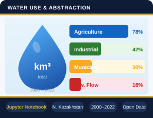

Водный баланс водохозяйственных бассейнов Северного Казахстана
на основе дистанционного зондирования, глобальных наборов данных и гидрологической информации.

Карты использования и покрова земель с границами водосборов Казахстана.
Открыть карту
Интерактивное WebGIS-приложение: осадки, эвапотранспирация, влажность почвы.
Открыть графики
Визуализация анализа водопользования и водозабора в Jupyter Notebook.
Открыть отчётПортал предоставляет пространственные данные по водосборным бассейнам в рамках проекта «Водный баланс водохозяйственных бассейнов Северного Казахстана с использованием дистанционного зондирования, глобальных наборов данных и гидрологической информации». Проект реализован при поддержке Министерства науки и высшего образования Республики Казахстан. Подробнее на странице проекта.
Доступны пространственные и временные ряды для гидрологического анализа Северного Казахстана: векторные слои водосборов, бассейнов, суббассейнов, гидрологических районов, рек и озёр, а также растровые данные ESA WorldCover (100 м). Временные ряды: осадки (MSWEP), влажность почвы (ERA5), показатели водного баланса (GLEAM) в разрезе бассейнов. Форматы: GeoJSON, GeoPackage, Shapefile, GeoTIFF, JSON, CSV, Excel — для использования в ГИС-платформах, моделировании и визуализации.
По вопросам обращайтесь к менеджеру проекта: vyapiyev@nu.edu.kz